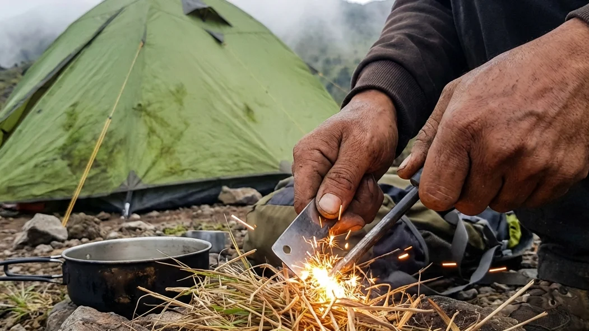

1. Kediri: Permata Tersembunyi untuk Para Pencari Ketenangan
Ketika membicarakan destinasi wisata alam dan perkemahan di Jawa Timur, nama-nama besar seperti kawasan pegunungan Malang Raya, Gunung Bromo, atau dataran tinggi Ijen biasanya menjadi daftar yang paling pertama muncul di kepala para pelancong. Namun, tahukah Anda bahwa sedikit bergeser ke arah barat daya, terdapat sebuah kabupaten yang menyimpan potensi alam yang tidak kalah magis? Ya, Kediri adalah permata tersembunyi (*hidden gem*) yang belakangan ini mulai dilirik oleh para petualang yang mencari ketenangan murni dan pengalaman alam yang lebih otentik, jauh dari jebakan hiruk pikuk wisata yang terlampau komersial.
Menanggalkan kepenatan dan rutinitas kota dengan menjelajahi Wisata Camping Kediri adalah sebuah pilihan eskapisme (pelarian) yang sangat brilian. Di daerah ini, Anda tidak hanya ditawarkan hawa yang dingin, namun juga keheningan hutan pinus yang luar biasa damai. Melalui ulasan komprehensif berjudul Menepi ke Alam: Menikmati Pesona Wisata Camping Kediri dengan Sensasi Berkemah Klasik ini, kita akan mengupas secara mendalam apa yang membuat topografi Kediri begitu spesial, mengapa sensasi berkemah klasik menggunakan tenda dome lebih memuaskan dari segi psikologis, serta persiapan teknis apa saja yang wajib Anda bawa ke lapangan agar liburan Anda tidak berujung pada penderitaan fisik.
2. Mengapa Kediri Menjadi Destinasi Camping yang Menarik?
Meskipun namanya belum seramai Batu Malang, Kediri secara geografis memiliki infrastruktur alam yang diciptakan sempurna untuk kegiatan petualangan luar ruang (outdoor).
Topografi Alam yang Sangat Mendukung
Secara lanskap, Kabupaten Kediri dibelah oleh sungai raksasa Brantas dan diapit oleh dua pasak bumi yang kokoh, yakni deretan Gunung Wilis di sebelah barat dan Gunung Kelud di sebelah timur. Kontur perbukitan ini menciptakan lekukan-lembah dan area hutan tropis yang amat rapat, air terjun tersembunyi yang jernih, serta medan sabana yang cukup luas. Lahan-lahan datar alami yang terbentuk di area pegunungan inilah yang kemudian menjelma menjadi camping ground ideal dengan kontur tanah yang sangat nyaman untuk menggelar alas tidur.
Kesejukan Lereng Gunung Wilis dan Kelud
Berada di atas elevasi 600 hingga 1.200 meter di atas permukaan laut (MDPL), kawasan lereng pegunungan di Kediri menyajikan cuaca makro yang amat sejuk. Saat siang hari, sinar matahari tidak akan terasa menyengat kulit karena terhalang oleh rapatnya tajuk daun pinus. Sementara ketika malam tiba, suhu udara akan menurun drastis menjadi hawa pegunungan yang menggigit tulang. Kesejukan udara yang minim emisi gas buang kendaraan (polusi) inilah yang dicari oleh warga urban kota besar untuk menetralisir dan mendetoksifikasi paru-paru mereka dari racun keseharian.
BACA JUGA (Edukasi Berkemah):
3. Daya Tarik Sensasi Berkemah Klasik
Di saat tren pariwisata berlomba-lomba mengubah hutan menjadi resort glamping berfasilitas kasur springbed dan AC, sebagian pejalan alam justru mendambakan kembalinya sensasi berkemah dalam definisi aslinya.
Kembali ke Dasar (Back to Basic)
Berkemah klasik (classic camping) adalah manifestasi paling jujur dari konsep Back to Basic. Di sini, Anda secara sukarela melucuti segala bentuk kenyamanan instan dan teknologi modern. Anda kembali menyentuh tanah, meraba tekstur pasak besi yang dingin, mencium aroma pinus yang basah, dan merasakan betapa berharganya hangatnya kepulan asap dari segelas teh seduh. Tidur di atas matras dengan punggung yang nyaris menyentuh bumi akan "menyetrum" kembali naluri purba manusia dan menyelaraskan ritme biologis tubuh dengan alam semesta secara nyata.
Membangun Kemandirian dan Solidaritas Tim
Tidak ada pelayan kamar (room boy) di alam bebas. Menginap dengan cara yang otentik memaksa Anda untuk proaktif bekerja. Mulai dari mencari lahan yang rata, merangkai kerangka fiberglass agar tenda bisa berdiri, memastikan patok (pegs) tertancap kuat agar tenda tidak terbang tertiup angin, hingga membagi tugas siapa yang akan memasak air dan bahan makanan di malam hari. Serangkaian kesulitan logistik inilah yang justru akan memecah kecanggungan sosial, membangun kerjasama tim yang kokoh, dan melahirkan cerita-cerita nostalgia yang akan Anda tertawakan bersama teman-teman bertahun-tahun kemudian.
4. Pilihan Tenda Dome untuk Pengalaman Otentik
Kunci utama untuk bisa menikmati alam dengan cara yang sederhana namun aman terletak pada pemilihan jenis rumah sementara Anda.
Praktis, Dinamis, dan Tahan Angin
Tenda berbentuk setengah bola atau yang akrab disebut tenda dome adalah mahkota tak tergantikan dalam dunia petualangan luar ruang. Bentuknya yang ringkas membuatnya sangat mudah untuk dimasukkan ke dalam keranjang motor atau tas ransel (carrier) tanpa memakan volume ruang yang besar. Lebih dari itu, desain melengkung dari dome ini berfungsi ganda sebagai tameng aerodinamis; ketika angin badai gunung berhembus, tenda dome akan memecah laju angin tersebut ke sekelilingnya, meminimalisir risiko patahnya tiang penyangga yang sering dialami oleh tenda-tenda kotak berkanopi lebar.
Perlindungan Sistem Double Layer
Syarat absolut yang tidak bisa ditawar jika Anda berkemah di kawasan pegunungan Kediri adalah WAJIB menggunakan tenda tipe Double Layer (kain dua lapis). Cuaca pegunungan itu kejam. Jika Anda hanya memakai tenda *single layer* murahan, uap dari napas tubuh Anda saat tidur tidak akan bisa keluar, memantul di atap tenda, lalu menetes membasahi wajah Anda di subuh hari akibat proses kondensasi. Lapisan terluar tenda ganda (flysheet) bertindak sebagai payung penahan uap dan hujan yang sesungguhnya, membiarkan kabin jaring tempat Anda tidur tetap kering dan hangat sempurna.

Meniup perapian kecil atau menyiapkan sarapan secara mandiri menggunakan peralatan masak lapangan (nesting) di depan tenda adalah wujud kepuasan batin tertinggi dalam petualangan klasik. (Ilustrasi: Unsplash)5. Rekomendasi Spot Wisata Camping di Kediri
Beranjak ke bagian inti, di manakah titik yang paling ideal untuk menggelar matras dan mendirikan dome Anda di wilayah Kabupaten Kediri?
Kawasan Wisata Hutan Pinus Besuki
Berada di kawasan Mojo, Hutan Pinus Besuki adalah lokasi camping ground klasik yang paling diagungkan oleh penikmat alam Kediri. Lahan perkemahannya berjejer teratur di antara batang-batang pohon pinus yang amat rindang, menyajikan suhu udara yang luar biasa dingin karena berdekatan dengan area wisata Air Terjun Dolo. Karena telah dikelola dengan baik oleh aparat setempat dan Perhutani, tempat ini cukup aman bagi keluarga maupun pemula karena ketersediaan warung kecil dan sarana MCK sederhana yang bisa dimanfaatkan dalam keadaan mendesak.
Bukit Dhoho Indah dan Gazebo Wilis
Bagi Anda yang mendambakan perpaduan antara pesona sabana terbuka yang menghadap lurus ke arah *city light* kota, kawasan lereng timur Gunung Wilis seperti Gazebo Wilis menyajikan tantangan yang menarik. Di area *view* terbuka seperti ini, Anda tidak akan terhalang pepohonan saat berburu foto fajar (*sunrise*) atau melihat gemerlap bintang (*milky way*) di malam hari. Namun ingat, area terbuka berarti paparan angin malam yang berhembus akan terasa ratusan kali lipat lebih kencang membentur dinding tenda Anda.
BACA JUGA (Kenyamanan Berkemah):
6. Persiapan Logistik dan Perlengkapan Esensial
Berkemah otentik berarti menangguhkan hidup pada kekuatan punggung dan isi ransel Anda. Keteledoran dalam menyiapkan logistik bisa berakibat fatal.
Sistem Pakaian Berlapis (Layering System)
Berhentilah membungkus tubuh Anda dengan sweater katun tipis! Menghadapi cuaca gunung menuntut Anda untuk memahami 3-Layering System. Lapisan pertama (base layer), gunakan kaus khusus olahraga yang menyerap keringat. Lapis di atasnya (mid layer), kenakan jaket dari bahan *polar/fleece* yang bertugas seperti oven penyimpan panas tubuh. Tutup sebagai benteng terluar (outer layer) dengan jaket berbahan *parasut* tebal anti-air (windbreaker) agar tiupan angin beku Kediri tidak bisa menembus tulang Anda. Kenakan juga penutup kepala rajut (beanie) untuk menjaga titik panas utama di kepala.
Peralatan Memasak Lapangan (Nesting)
Di alam bebas, Anda adalah kokinya. Jangan lupakan kompor gas lipat portabel lengkap dengan tabung gas cadangannya (hi-cook). Bawa pula panci aluminium bersusun (sering disebut nesting) yang amat fungsional untuk dipakai menggoreng, merebus, maupun menanak nasi secara bersamaan. Logistik bahan makanan utamakan yang padat kalori dan mudah disajikan, semisal *corned beef*, sosis, telur, mi instan, dan tentu saja bubuk kopi hitam asli untuk amunisi begadang Anda melawan malam.
7. Menjaga Etika Alam Bebas Saat Berkemah
Menjadi petualang tangguh tak akan ada nilainya jika Anda memiliki adab yang cacat terhadap sang tuan rumah, yakni alam itu sendiri.
Terapkan Selalu Prinsip Leave No Trace
Ini adalah dogma tertinggi bagi setiap penggiat outdoor: "Bawa pulang apa yang Anda bawa naik". Jangan meninggalkan jejak sampah apa pun! Sampah plastik bungkus permen, puntung rokok, botol air mineral, hingga sisa kuah masakan harus dikemas rapi ke dalam kantong kresek hitam (*trash bag*) mandiri untuk Anda buang saat kembali ke kota. Selain itu, jangan menyalakan api unggun sembarangan di atas rumput kering yang bisa memicu kebakaran gunung; gunakanlah area tanah yang steril atau alas bakar khusus (*fire pit*). Jagalah tata krama dengan tidak berteriak atau menyalakan speaker musik keras-keras, hargailah kedamaian pengunjung lain dan satwa burung yang tengah tertidur lelap.
8. Kesimpulan
Melepaskan penat dari sirkulasi kehidupan kota yang seakan tanpa ampun bukanlah sebuah kemewahan, melainkan kebutuhan darurat untuk merestorasi mental health (kesehatan jiwa). Melalui bedah mendalam bertajuk Menepi ke Alam: Menikmati Pesona Wisata Camping Kediri dengan Sensasi Berkemah Klasik, kita akhirnya menyadari bahwa kabupaten ini menyimpan berjuta pesona eksotis di lekukan Gunung Wilis dan Kelud yang teramat sejuk. Keputusan untuk menginap menggunakan tenda dome klasik akan membangkitkan kembali naluri petualangan murni, memupuk kemandirian, dan mendekatkan diri Anda secara radikal pada kebesaran alam semesta. Bekali ransel Anda dengan persiapan perlengkapan anti-dingin (*layering system*) yang akurat, tegakkan etika konservasi Leave No Trace di lapangan, dan biarkan keheningan magis hutan pinus Kediri mengambil alih perannya untuk mengobati setiap kepenatan di dalam rongga dada Anda akhir pekan nanti.